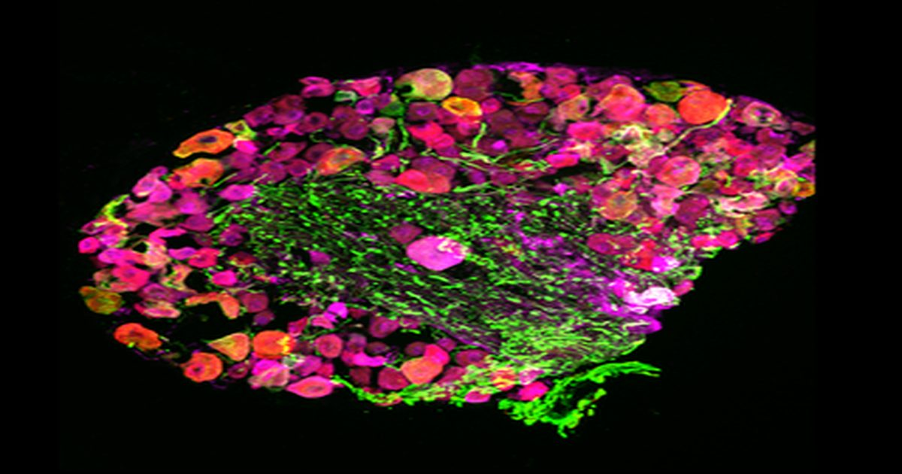

Механочувствительный канал TMEM63B способствует ощущению вредного тепла в ганглиях дорсального корня
chang Ye, Yan-Yu Zang, Gui-Fang Duan, Jiang Chen, Dan Wu, Dan Wang, Changlin Li, Yun Xu, Tianjiao Xia, Xiaoping Gu, Yun Stone Shi У млекопитающих ощущение тепла в первую очередь опосредовано термочувствительными каналами, особенно каналами переходного рецепторного потенциала (Trp), в нейронах ганглия дорсального корня (DRG).
Однако остается неясным, способствуют ли дополнительные каналы обнаружению вредного тепла.
Здесь мы исследовали роль механосенсибилизатора